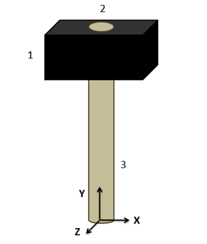
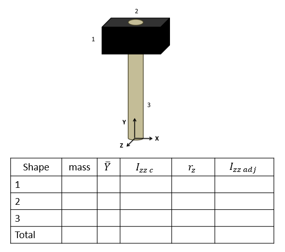

Mass Moments of Inertia via The Method of Composite Parts
Just as we did with the area moments of inertia, we can use the method of composite parts to calculate the mass moment of inertia of a composite body. The calculations will use mass values in place of areas, and we will need to work in three dimensions, but otherwise the process will be very similar to what we did in the last section.
Using the Method of Composite Parts to Find the Mass Moment of Inertia
To find the mass moment of inertia of a body using the method of composite parts, you need to start by breaking your your original body into simple shapes. Make sure each individual shape is available in the moment of inertia table in the right sidebar, and make sure to label the pieces in your diagram, and it can be useful to also add the axes you are using to your diagram. As you did with centroids, you can treat holes or cutouts as negative masses. These negative masses will represent the mass of the material removed with the hole.

First, you will want to identify the mass of each piece. These mass values may be given directly, or you may need to multiply the volume by a material density. Having holes in the piece can also complicate matters. For example, in the hammer shown above, the mass for shape one would be the mass of the hammer head before the hole is drilled out, and the mass for shape 2 would be the mass of the material removed by drilling out the hole in the hammer head.
The next step will be to determine the centroid location for each of the pieces, and potentially the center of mass of the whole body if we are taking the moment of inertia about that point. So far, this is just the same process we used to find the center of mass of a composite body.
Next we will look up the moments of inertia for our individual shapes in the moment of inertia table. To find these values you will plug numbers for height, width, radius, mass, etc. into formulas on the moment of inertia table. Do not use these formulas blindly though as you may need to mentally rotate the body if the orientation of the shape in the table does not match the orientation of the shape in your diagram. These represent the moment of inertia for each shape about its own center, which are denoted in this books as Ixxc and Iyyc in the calculations.
Before we can add all these moments of inertia together, we will need to adjust each of these using the parallel axis theorem so that the moments of inertia are all taken about the same axis. This could be about the center of mass if the body if the body is rotating freely in space, or about some other point if it is constrained to rotate about a specific axis.
For this whole process we are going to create a table to keep track of values. Devote a row to each part that your numbered earlier, and include a final "total" row that will be used for some values. Most of the work of the method of composite parts is filling in this table.

The columns will vary slightly with what you are looking for, but you will generally need the following.
- The mass of each part.
- The x, y, and z centroid locations for each part.
- The unadjusted moment of inertia values for each of the pieces (Ixxc, Iyyc, and/or Izzc). These will be the values calculated using the moment of inertia equations from the tables.
- The adjustment distances (rx, ry and/or rz) for each shape. For this value you will want to determine how far the x, y or z axis needs to move to go from the centroid of the part to location we are taking the moment of inertia about for the whole body (usually the centroid of the overall shape).
- Finally, you will have a column of the adjusted moments of inertia (Ixxadj, Iyyadj and/or Izzadj). Take the original moment of inertia about the centroid value then simply add your mass times r value squared with the parallel axis theorem.
The overall moment of inertia of your composite body is simply the sum of all of the numbers in the adjusted moment of inertia columns.
Note that with mass moments of inertia, we are working in three dimensions and will have up to three mass moments of inertia to calculate. If you need the mass moment of inertia about each of the three axes, you will have many columns in your table. If you only need to calculate the mass moment of inertia about a specific axis, you can leave out the columns relevant to the other axes of rotation.